Hei jeg heter Mira Eiene Foust! Jeg er 23 år, kommer fra Stavanger og bor i Bergen.
Jeg har en bachelor i grafisk design, visuell kommunikasjon fra KMD i Bergen.
Mine styrker ligger i illustrasjon og historiefortelling.
Jeg er på utkikk etter en fast jobb, men er også åpen for freelance oppdrag.
Les gjerne videre for mindre relevant fakta :)
Jeg elsker fiklearbeid! Det betyr også at jeg elsker alt som er litt vannskelig å få til, elsker å lære meg nye designprogrammer,
elsker å kode, og bygge flere sider og unødvenige funskjoner for nettsiden min.
Jeg er glad i røffe analoge uttrykk, og å kombinere dem med digitale verktøy.
Jeg elsker skarpe og knurvete teksturer, sterke farger, og snirklende dekorasjoner.
Jeg er veldig lidenskapelig når det kommer til redesign! Jeg mener at det skal svært mye til for at et plagg skal kastes,
oftest er det mulig å ikke bare fikse plagget, men også gjøre det finere og gi det mer sentimental verdi!
Utenfor design og illustrasjon skriver jeg også musikk! Jeg håper å om ikke så altfor lenge få gitt ut noe smått :)
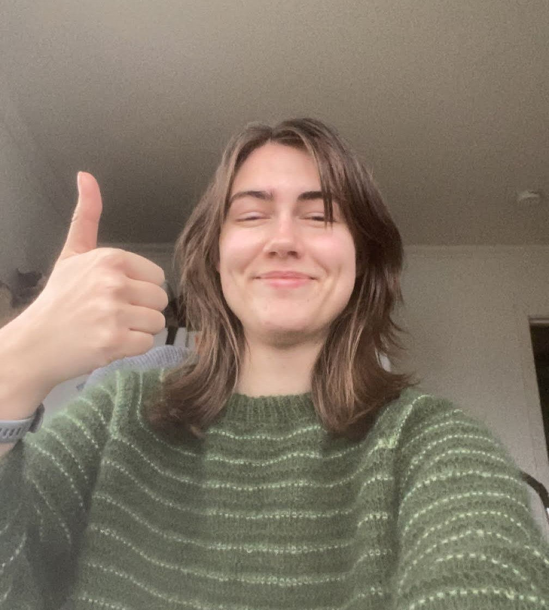

Mirabilia museum
Mirabilia
- / ˌmi rɑˈbɪl ɪˌɑ; /
plural noun, Latin.
marvels; miracles.
Mirabilia Museum is a museum dedicated to showcasing the love and memories surrounding objects.
The museum values personal experiences and individual stories over the grand histories you might expect to see in a museum.
It is also a personal graphic design project! Inspired by my own deep love for things and the meanings we apply to them.
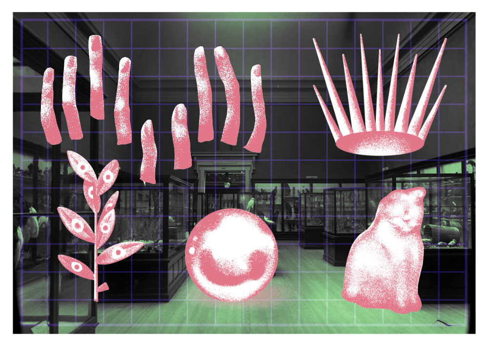

Ideen bak museet er at noen ting er viktige bare fordi noen har satt pris på dem og tatt vare på dem.
Gjenstander kan ha dype historier, om hvor de kom fra, hvordan de ble laget, eller bare hva de har har vært tilstede for.
Dette museet forteller de historiene.

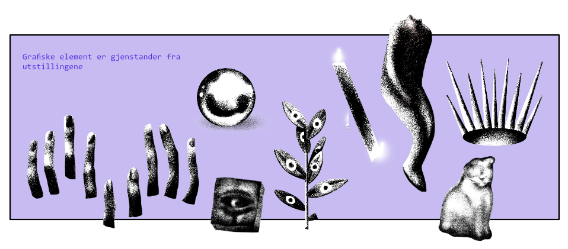
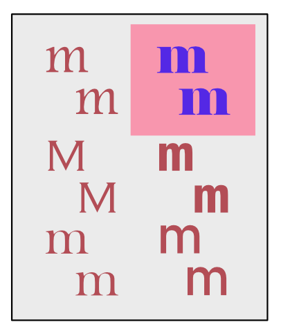
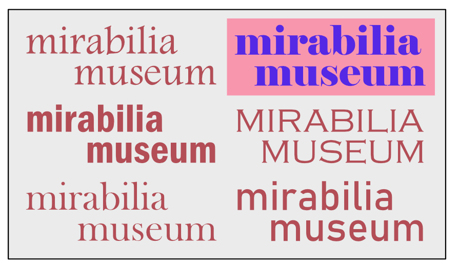
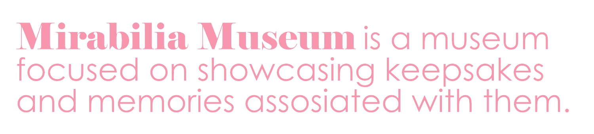
Navnet kom lenge før ideen! Jeg oppdaget det på en liten plaque på et besøk til museet Wellcome collection i London, i en utstilling om en samling med oddities og curiosities.
Mirabilia passet jo bare perfekt for meg og min kjærlighet for samlinger av ting! Dermed er dette et prosjekt som har levd i et par år i hodet mitt, og ett år utenfor.
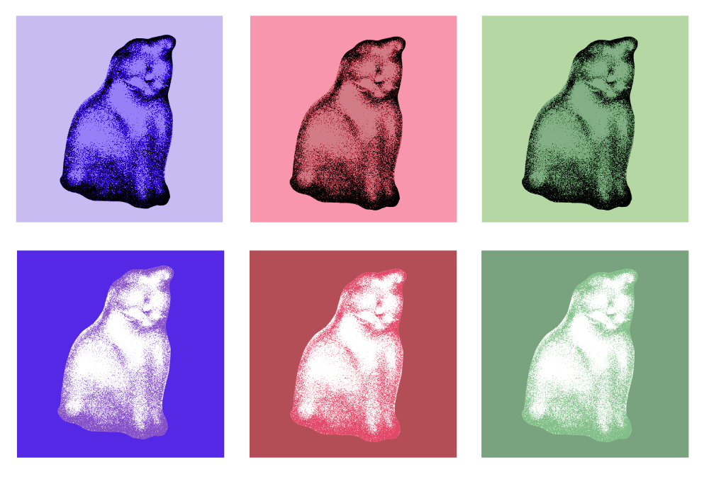
Den visuelle identiteten og konseptet bak museet tar inspirasjon fra settekasser.
Fargepaletten er en kombinasjon av dype saturerte farger, assosiert med tradisjonelle museum,
og lyse lette farger, for å få frem at dette er et koselig og humoristisk museum.
YMT magasin
✦ YMT mag nettside
✦ Diplom Visuelt 2024
✦ Gullkalven
Redaksjonell design, samarbeid, html/css, visuell identitet
YMT

"YMT is published by Visual communication, Design, Faculty of Fine Art, Music and Design,
University of Bergen © YMT 1, 2019; YMT 2, 2020; YMT 3, 2021, YMT 4 2022, YMT 5 2023
YMT is an experimental publication about Visual Communication Design as a field of knowledge
and is available in a limited edition print and is open source online."
Ymtmag


Redaksjonen
Art direction
Agnes Bohinen Muren | Anette Olianna Walbeck | Lene Marie Sæthre | Mina Kristine Aarseth | Maiken Larsen Solholmvik |
Sigve Tiller | Thondiv Ela Calip
Layout and print
Carolina Christina Lykins | Ida Kristine Ones | Jenny Karen Gautesdatter Paus |
Louise Häggström | Maria Stene Holstad | Marion Ingvaldsen Høydal | Marius Hansen Høgåås |
Malgorzata Kuznik | Ulva Bendiksen Vikse | Fredrik M. Salhus
Online house
Clara Neegard | Martin Magnussen | Mira Foust | Scott Bodin | Siri Angvik
Lærere
Dóra Ísleifsdóttir | Åse Huus | Magnus Nyquist
Printing
Aksell
Kunstlig intelligens er temaet for YMT vol. 5. Nettverk, kunstig læring og digitale feil ble basisen for uttrykket.
Alle store valgene for retning, tone og stil for magasinet var valg vi tok sammen som en redaksjon.


YMT gis ut både som trykk og som nettside. De skal fungere sammen som en helhet. En måte vi gjorde det var å bruke lignende visuelle virkemiddel,
som det uskarpe uttrykket fra kalketpapiret ble en blur effekt på nettsiden, det gradvis mer rotete oppsettet i magasinet ble bevegende overskrifter på nettsiden.
No Name Yet
A variable typeface that aims to experiment with the definition of legibility, between a conventional alphabet and abstract signs. The typeface blurs the edge of legibility, creating a familiar but also abstract impression that gives the font a unique character. It combines a conventional legible typeface (Open Sans Regular) and three forms of abstraction, which are Geometric, Mimetic, and Linear.
Made by
Yi-Chin Lai


Dette magasinet ble laget i 2023, og mye positivt og negativt har blitt lært om AI siden da.
Vi forsøkte å se temaet fra flere sider, hvordan det er mulig å bruke det på kreative måter, men også hvordan det påvirker den kreative bransjen negativt.
Det vi lærte etter utgaven ble gitt ut var hvordan kunstverk og arbeid blir hentet fra overalt på nettet uten vår tillatelse.
Hadde vi laget YMT vol.5 i dag hadde vi nok tatt andre valg, spesielt i forhold til mengden AI genererte bilder, men jeg er fortsatt stolt over prosjektet og erfaringen jeg fikk fra å jobbe sammen som en redaksjon.
Visuell identitet og brand illustrasjon
✦ Work in progress
Illustrasjon, branding, visuell identitet
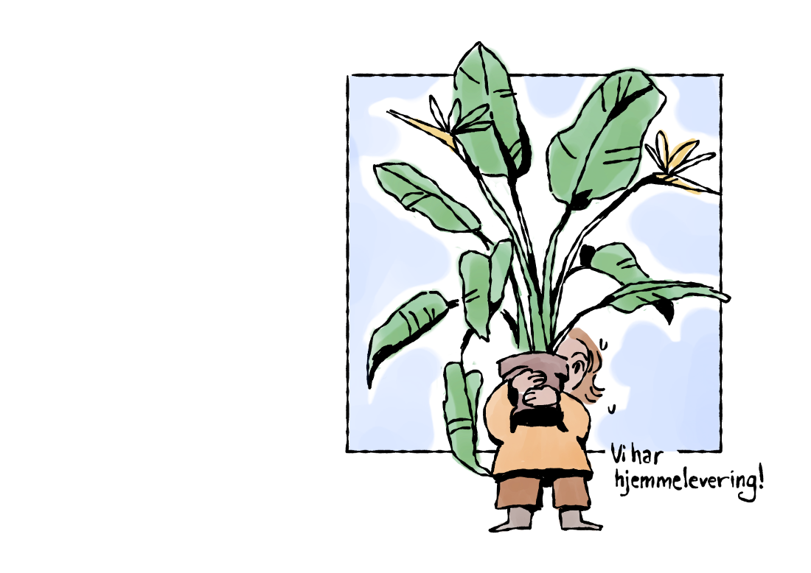
Briefen jeg ga meg selv for denne teoretiske oppgaven var; Hva er den koseligste bedriften jeg kan finne på, og lage branding illustrasjoner til?
Fokuset for prosjektet er illustrasjon, og å få frem en følelse av at dette er det koseligste stedet mulig du kan kjøpe planter!
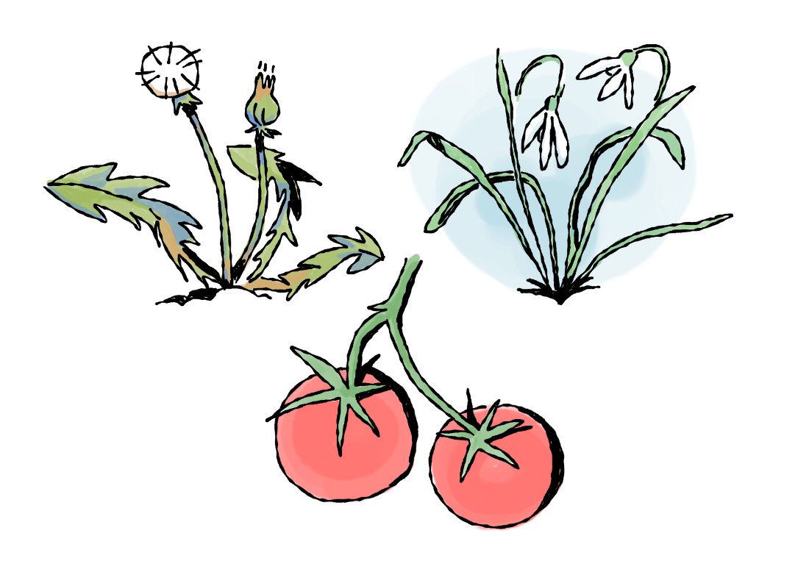
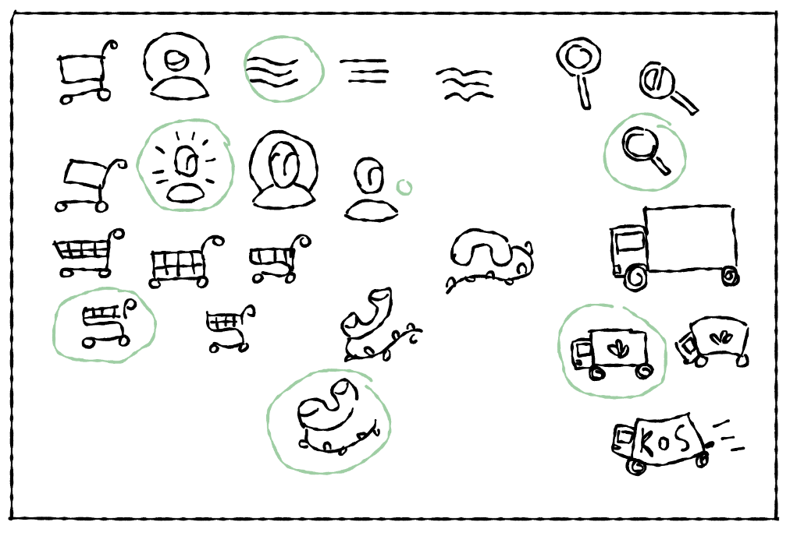
WIP
Typografi og plakat

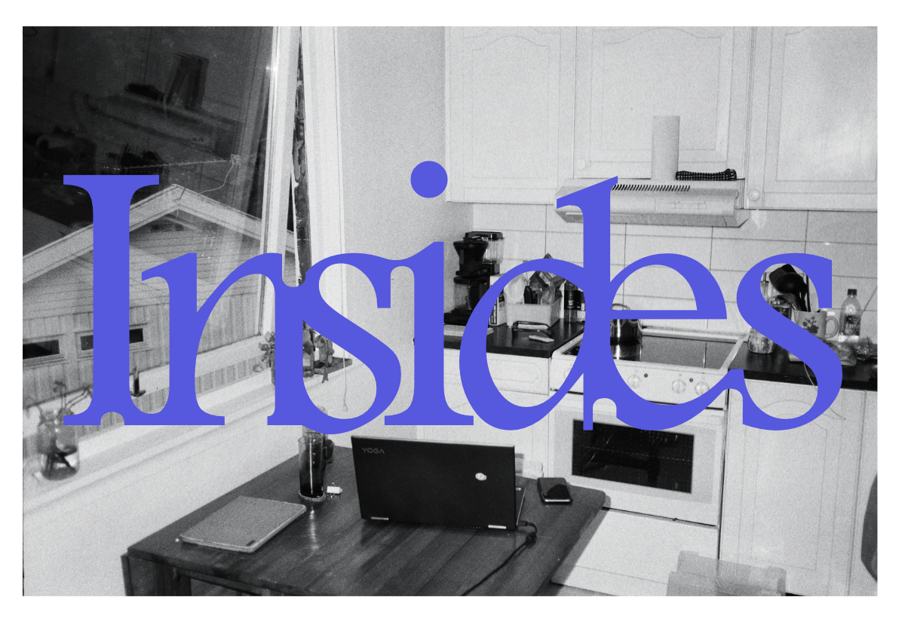

Public domain plakater
Public Domain Review er en nett-jounal med hensikt å fremme alt det interessante og nydelige som finnes i det offentlige domenet.
De presenterer gamle bøker, eller setter sammen samlinger utifra tema.


 Takk for meg! Det var alt jeg hadde forberedt for dere, men gjerne ta en titt på
Takk for meg! Det var alt jeg hadde forberedt for dere, men gjerne ta en titt på